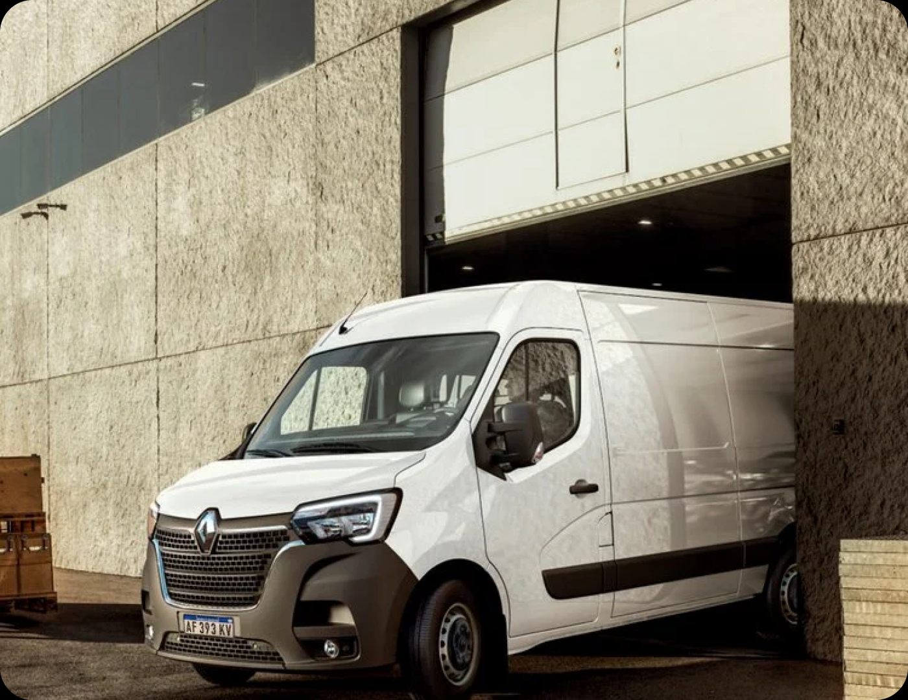

Tenés una Fera, sos parte.
En Fera Motors, queremos que seas parte de nuestra comunidad. Descubrí novedades, conocé nuestros modelos y disfrutá de una experiencia pensada para quienes comparten la pasión por las dos ruedas. Porque ser parte de Fera es mucho más que tener un vehículo; es disfrutar cada recorrido y vivir tu pasión todos los días.
